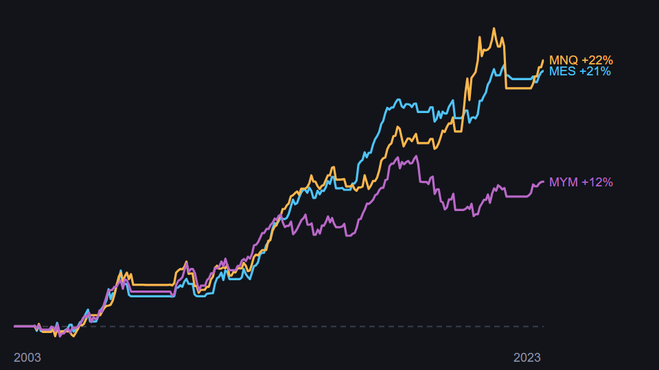
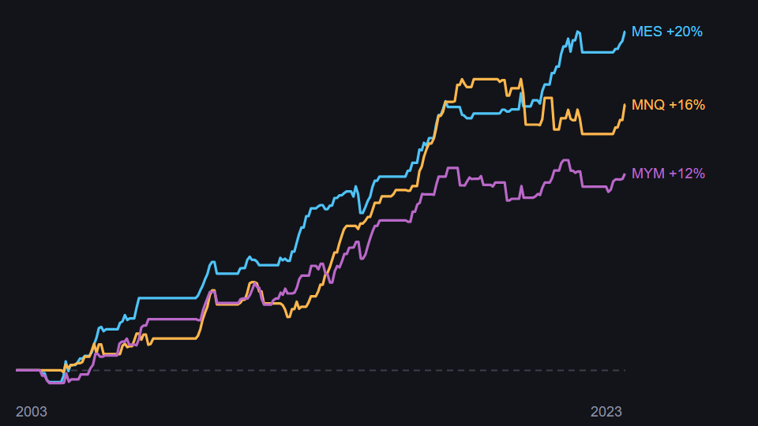
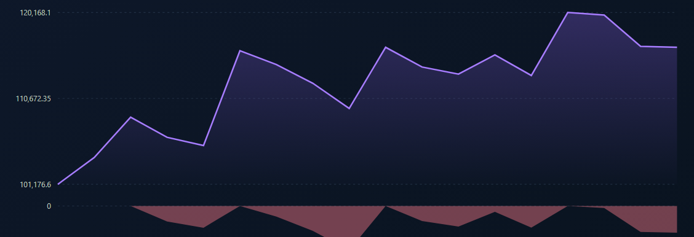
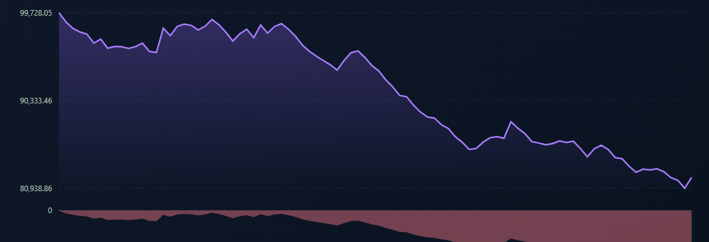

Strategies, indicators and ideas.
Study the rules and backtest behind a strategy, read an indicator’s Pine code, and open them in Trader Cockpit. Research, not financial advice, and no result is promised.
Strategies (5)





Indicators (25)
- Relative Liquidity Indexby Trader Cockpit. Pine indicator, MPL-2.0
- SMA 50 / 100 / 150 / 200 / SSMA 360by Trader Cockpit. Pine indicator, MPL-2.0
- DIY Volume Profileby Trader Cockpit. Pine indicator, MPL-2.0
- Close Strengthby Trader Cockpit. Pine indicator, MPL-2.0
- Swing Levelsby Trader Cockpit. Pine indicator, MPL-2.0
- Super Trend Bands (STBANDS)by Trader Cockpit. Pine indicator, Apache-2.0
- Swing High/Low Detectionby Trader Cockpit. Pine indicator, Apache-2.0
- Time Series Forecast (TSF)by Trader Cockpit. Pine indicator, MPL-2.0
- MTF Bollinger Bands Trend Stopby Trader Cockpit. Pine indicator, MPL-2.0
- Detrended CVD (Z-Score Oscillator)by Trader Cockpit. Pine indicator, MPL-2.0
- Day Trading Reversal Systemby Trader Cockpit. Pine indicator, MPL-2.0
- S/R Levelsby Trader Cockpit. Pine indicator, MPL-2.0
- Vaultfy Sentiment Apexby Trader Cockpit. Pine indicator, MPL-2.0
- Volatility-Adjusted Momentum Oscillator (VAMO)by Trader Cockpit. Pine indicator, MIT
- Standardized MA Differenceby Trader Cockpit. Pine indicator, MPL-2.0
- John F. Ehlers - Zero Mean Roofing Filterby Trader Cockpit. Pine indicator, MPL-2.0
- Marubozu Candleby Trader Cockpit. Pine indicator, MPL-2.0
- Colored ADX & DI Crossings w/ Options - Llipeby Trader Cockpit. Pine indicator, MPL-2.0
- Volume Analysis Fixed Rangeby Trader Cockpit. Pine indicator, MPL-2.0
- Custom Session OHLby Trader Cockpit. Pine indicator, MIT
- trend-line and res-lineby Trader Cockpit. Pine indicator, MPL-2.0
- Parabolic Stop and Reverse (Trend Following)by Trader Cockpit. Pine indicator, MPL-2.0
- R2-Adaptive Regressionby Trader Cockpit. Pine indicator, MPL-2.0
- SuperTrend + MACD + EMAby Trader Cockpit. Pine indicator, MPL-2.0
- RSI+EMAs for Bootsie Strategyby Trader Cockpit. Pine indicator, MPL-2.0